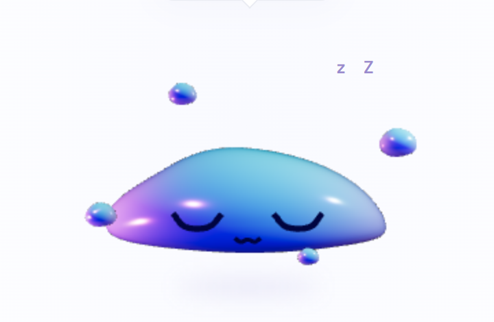
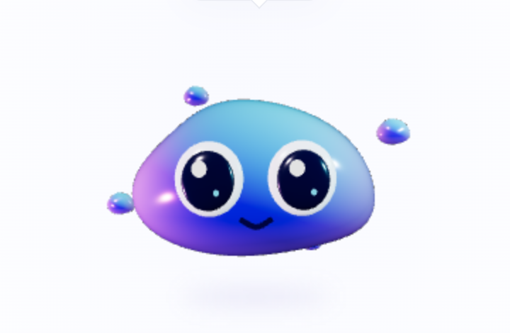
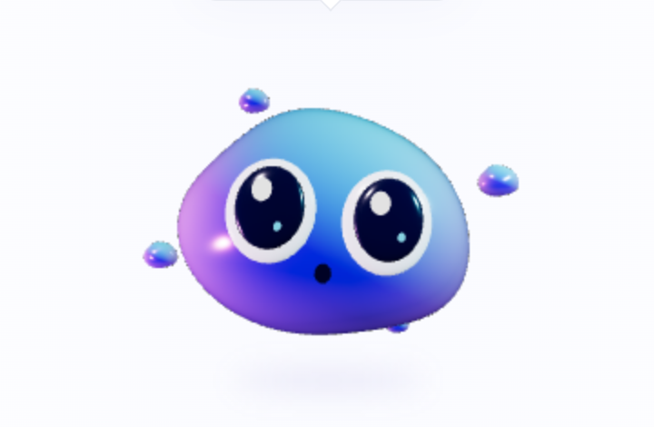
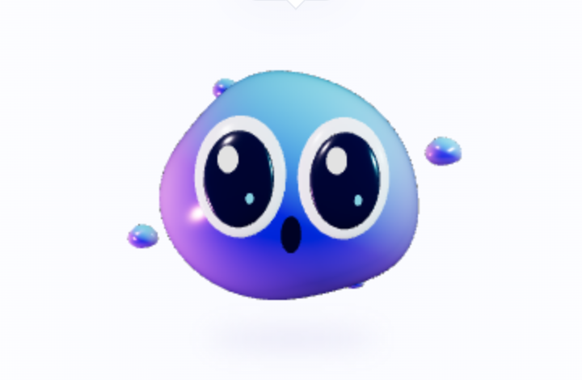
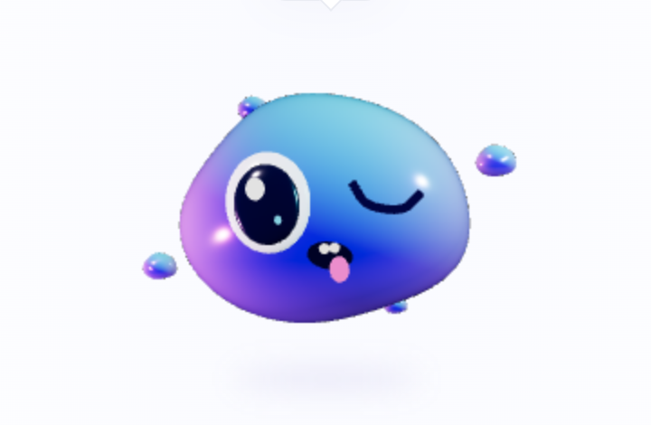
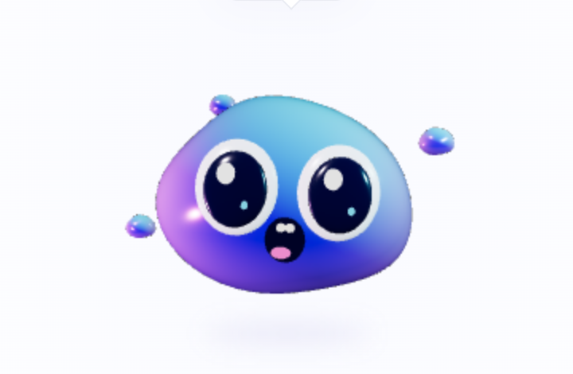

Brisky · expressions
Sleeping reference compared with the procedural character, followed by the six expression previews.
Reference · Sleeping / Inactive
Current · domed body, flattened base, relaxed eyelids, tiny mouth 
Idle · warm smile
Listening · curious and attentive
Surprise · first poke reaction
Playful · wink and tongue
Drag · excited eyes and open mouthSleep · quiet resting faceThe reference has richer translucent lighting and asymmetry. This pass aligns pose and emotion; material matching remains a separate refinement.